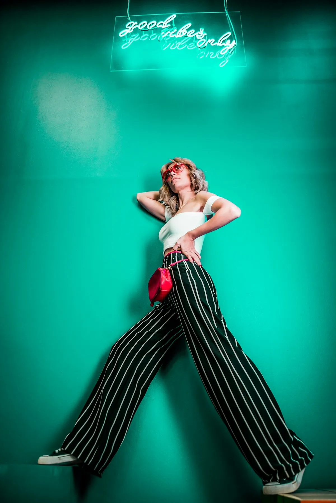

Leadership
The Guardians
of the Collection

Dr. Eleanor Whitmore
Society President & Chief Botanist
With 30 years of field research across Southeast Asia and Central America, Dr. Whitmore has personally discovered and classified four previously unknown orchid species.

James Thornton
Head of Cultivation
James oversees all greenhouse operations and has developed the society's proprietary cultivation protocols, now referenced by botanical institutions worldwide.
Sophia Chen
Conservation Programme Director
Sophia leads our partnership with Kew Gardens and international conservation bodies, overseeing the propagation of endangered species from eight countries.